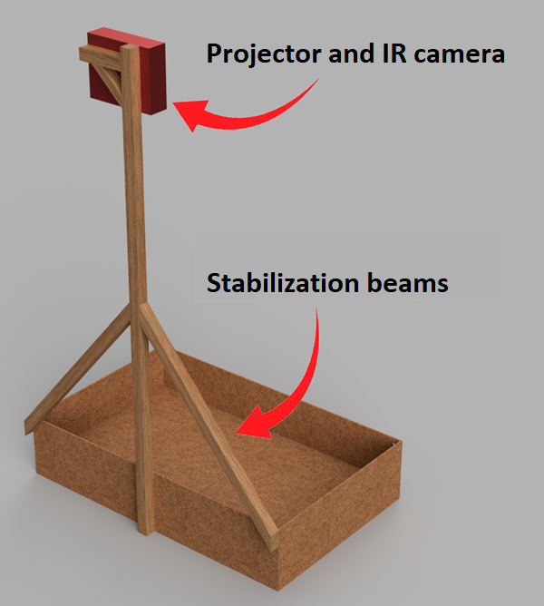

Technologies used:
- C#
- Unity
- Arduino
- IR Camera
- Projector
The artificial reality sandbox was a school project that some classmates and I created, for which we received the top grade. The assignment was to create a physical interaction interface, that would be on display for our school’s open house.
My role in the development was writing the code that made this project possible. A project of this caliber has a lot of components that need to communicate. The main piece of software that I used to achieve this was Unity because of its graphical components and because of my experience using it. For the IR camera, I chose to use an Xbox 360 Kinect as they’re relatively cheap and integrate easily with the Windows operating system. The knobs were controlled by an Arduino connected to the same Windows computer.
The goal was to create the illusion of a responsive landscape that the user could sculpt and interact with. We achieved this with the use of a projector and IR camera mounted above a sandbox. The IR camera measured the height of the sand. The projector would then project a picture onto the sand based on the heightmap, updating around once a second. Furthermore, there were knobs on the side of the box that controlled the water level and the seasons. There were even speakers that played a dynamic soundtrack. Depending on the season, the colors of the landscape and the music would change.
Read the full report